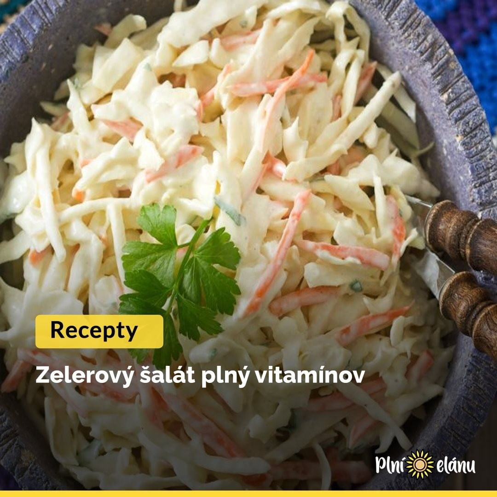

Zelerový šalát podľa @plnielanu.sk — Normy Jedál
#receptyplneelanu Jednoduchý a pritom dobrý šalát bude hotový za pár minút. Tu je recept 👇
Budeme potrebovať:
1 polovicu koreňového zeleru
1 jablko
1 lyžicu chrenu
150 g smotanového jogurtu
čierne mleté korenie
1 citrón
Postup:
Zeler očistíme, umyjeme a postrúhame na najjemnejšom strúhadle. Očistené jablko nastrúhame nahrubo. Aby sme nemali neporiadok, použijeme väčšiu misku.
Do misy pridáme dobre ostrý chren, jogurt a dochutíme štipkou čierneho korenia.
Na záver odšťavíme polovicu citróna, pridáme k ostatným surovinám a poriadne premiešame.
Pikantný zelerový šalát môžeme zjesť hneď alebo dáme do chladničky, kde vydrží aj do druhého dňa.
Dobrú chuť! 😋 #plnielanusk #clanok #slovensko #slovakia #zdravie #rady #tipy #zaujimavost #domacnost #recept #zelerovysalat #salat #dnesjem #jemzdravo #followme